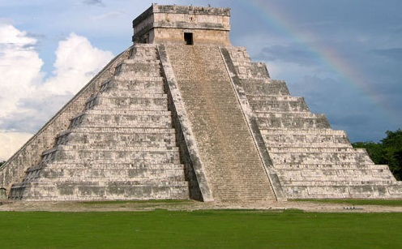
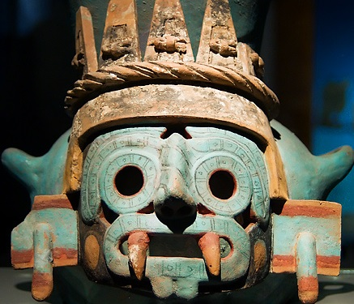

27 de Abril 1406
Cultura Mexica
Los mexicas llamados en la historiografía tradicional aztecas,nota fueron un pueblo mesoamericano de filiación nahua que fundó México-Tenochtitlan. Hacia el siglo xv, en el periodo Posclásico Tardío, se convirtió en el centro de uno de los Estados más extensos que se conoció en Mesoamérica, asentado en un islote al poniente del lago de Texcoco, sobre los márgenes centro y sur de los lagos, como en Huexotla, Coatlinchan, Culhuacan, Iztapalapa, Chalco, Xico, Xochimilco, Tacuba, Azcapotzalco, Tenayuca y Xaltocan, hacia finales del Posclásico Temprano (900-1200), hoy prácticamente desecado.
Leer más...

10 de Marzo 1439
Cultura Maya
La cultura maya fue una civilización mesoamericana que se desarrolló en Guatemala, Belice, México (en los estados de Yucatán, Campeche, Quintana Roo, Chiapas y Tabasco) y la parte occidental de Honduras y El Salvador, abarcando más de 300 000 km².
Leer más...
30 de Mayo 1400
Cultura Olmeca
La cultura olmeca fue una civilización que se desarrolló durante el periodo preclásico de Mesoamérica. Aunque se han encontrado vestigios de su presencia en amplias zonas de Mesoamérica, se considera que el área cultural olmeca —zona metropolitana— abarca la parte sureste del estado de Veracruz y el oeste de Tabasco.
Leer más...

14 de Octubre 1506ssss
Tlaloc dios de la lluvia
Tláloc es una deidad mesoamericana del agua celeste. La derivación de su nombre no está clara. Los mexicas lo consideraban el responsable de la estación lluviosa y hacían ceremonias para honrarlo en el primer mes del año. Bernardino de Sahagún y Alfredo Chavero lo describen como el dios del rayo, de la lluvia y de los terremotos.
Leer más...